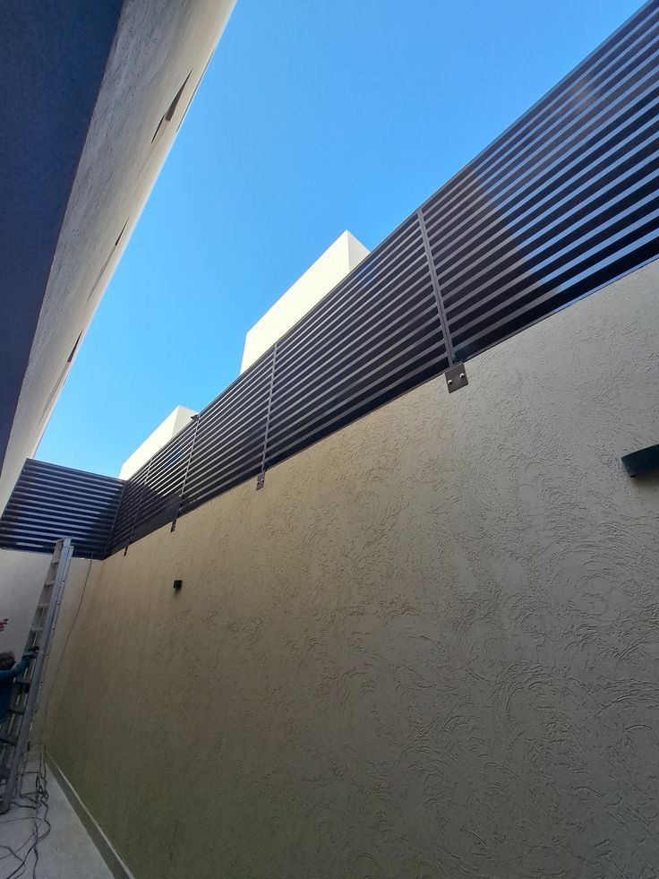
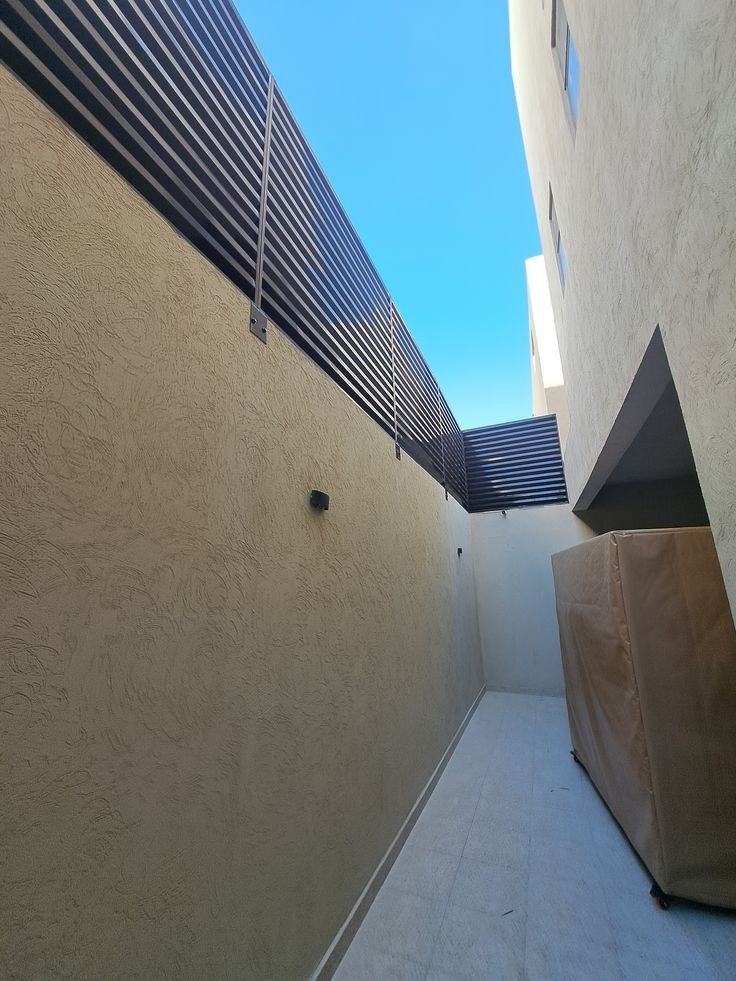

تسوير المزرعة أو الأرض الزراعية ضرورة لا تقبل التأجيل — يحمي ممتلكاتك من التعدي، يُحدّد حدود أرضك بوضوح قانوني، ويصون محصولك من الحيوانات والمتطفلين. نحن في مؤسسة سواتر المدينة نُنفّذ تسوير المزارع والأراضي في المدينة المنورة وينبع بأسرع وقت وأنسب أسعار. اتصل الآن: 0559939118.

سور حديد متين لتسوير مزرعة — تنفيذ سواتر المدينة في المدينة المنورة
أنواع التسوير المناسبة للمزارع والأراضي الزراعية
تختلف احتياجات التسوير من مزرعة إلى أخرى حسب المساحة والغرض والميزانية. نُقدّم لك أفضل الخيارات المتاحة:
1. شبك الأسلاك الخضراء (الأكثر شيوعاً للمزارع)
شبك معدني مُغلفن بالبلاستيك الأخضر يمتزج مع البيئة الزراعية ويُوفّر حمايةً ممتازة بتكلفة منخفضة. يأتي بارتفاعات متعددة من 1 متر إلى 2.5 متر، ويُثبَّت على أعمدة حديدية مدفونة في الأرض. خيار مثالي للمزارع الكبيرة ذات المحيطات الطويلة.
2. السور الحديدي المجلفن
قضبان حديد مجلفنة بطلاء مقاوم للصدأ والعوامل الجوية. يُعطي مظهراً أكثر رسمية وصلابة مقارنة بالشبك، ويُناسب مداخل المزارع والمستودعات والأراضي التي تتطلب أماناً أعلى. يمكن دهانه بألوان متعددة.
3. سور البلوك (الحجر أو الإسمنت)
الخيار الأكثر متانة وإحكاماً، يُناسب المزارع الصغيرة ذات الموقع المميز أو الأراضي المحاذية للطرق العامة. يوفر خصوصية تامة وحماية قصوى من الاقتحام، وعمره يمتد لعقود دون صيانة تُذكر.
4. السور الحجري التقليدي
يُلائم الأراضي الزراعية ذات الطابع التراثي والمزارع التقليدية. يُبنى من حجر طبيعي أو حجر بازلت بمظهر أصيل يزيد من قيمة الأرض ويمنحها هوية مميزة.
مميزات كل نوع — مقارنة سريعة
شبك الأسلاك الخضراء
السعر: الأرخص — المتانة: جيدة — المظهر: طبيعي — مناسب للمساحات الكبيرة جداً
السور الحديدي المجلفن
السعر: متوسط — المتانة: ممتازة — المظهر: احترافي — مقاوم للصدأ والحرارة
سور البلوك
السعر: أعلى — المتانة: الأعلى — المظهر: رسمي متين — خصوصية كاملة وأمان قصوى
السور الحجري
السعر: متوسط إلى مرتفع — المتانة: ممتازة — المظهر: تراثي أصيل — يرفع قيمة العقار
أعمال التسوير التي ننفذها
لا نقتصر على تركيب الأسوار فحسب، بل نُقدّم منظومة متكاملة لتسوير مزرعتك أو أرضك:
- أسوار طويلة تمتد لمئات ومئات الأمتار دون انقطاع أو تقطع في الجودة
- بوابات حديدية منزلقة أو ذات مصراعين بأقفال آمنة وتشطيب احترافي
- شبكات أمنية مُضافة في الأسفل لمنع الحيوانات الصغيرة من التسلل
- أعمدة حديدية مدفونة بالخرسانة لضمان ثبات السور في التربة الرملية والطينية
- إضافة أسلاك شائكة فوق السور للحماية من التسلق عند الطلب
- تسوير مستودعات وأحواش ومخازن مواد البناء والمعدات الزراعية

تسوير أرض بسور حديد متين — تنفيذ سواتر المدينة في المدينة المنورة
كيف نُنفّذ التسوير؟ — مراحل العمل
المعاينة الميدانية المجانية
يزور فريقنا الأرض أو المزرعة، يقيس المحيط الكلي، ويُقيّم طبيعة التربة لاختيار طريقة التثبيت الأنسب
اختيار المواد وتقديم العرض
نُقدّم لك عرض سعر مفصّلاً يشمل نوع السور والكميات والتكلفة الإجمالية بشفافية تامة
تجهيز الأرض وحفر الأعمدة
نُجهّز خط السور وندفن الأعمدة في الأعماق المناسبة مع صب خرسانة التثبيت لضمان الاستقرار التام
تركيب السور وتشطيبه
نُركّب الشبك أو لوحات الحديد أو نبني السور البلوك بدقة عالية، ثم نُشطّب جميع الوصلات والزوايا
تسليم المشروع والضمان
نُسلّمك المشروع منجزاً بالكامل مع ضمان على جميع أعمال التركيب والمواد المستخدمة
جدول أسعار التسوير التقريبية 2026 (سعر المتر الطولي)
| نوع التسوير | السعر التقريبي للمتر الطولي |
|---|---|
| شبك أسلاك خضراء بارتفاع 1.5 متر | من 55 ريال |
| شبك أسلاك خضراء بارتفاع 2 متر | من 75 ريال |
| سور حديدي مجلفن بارتفاع 1.5 متر | من 90 ريال |
| سور حديدي مجلفن بارتفاع 2 متر | من 130 ريال |
| سور بلوك إسمنتي (ارتفاع 2 متر) | من 180 ريال |
| بوابة حديدية منزلقة | حسب العرض والنوع |
الأسعار تقريبية وتتأثر بطول المحيط الكلي وطبيعة التربة ومواصفات المواد. كلما كانت المساحة أكبر، كان السعر أنسب للمتر الطولي. اطلب معاينة مجانية وعرض سعر دقيق على 0559939118.
سوّر مزرعتك أو أرضك اليوم
تواصل معنا الآن لمعاينة مجانية وعرض سعر بدون أي التزام — نصل إليك في المدينة المنورة وينبع